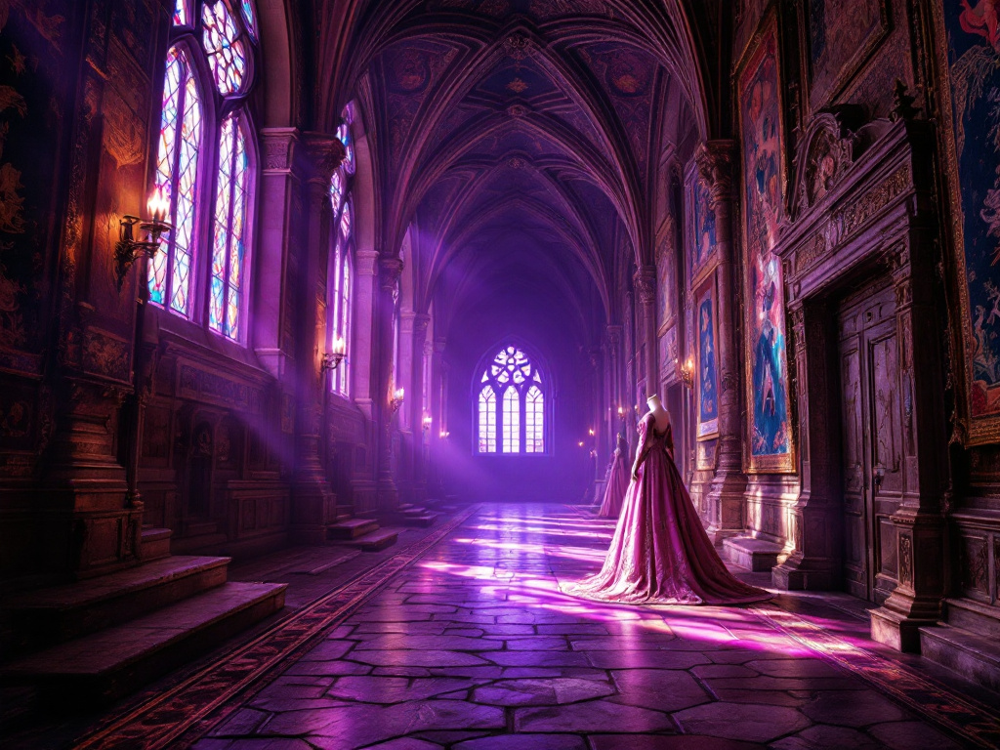
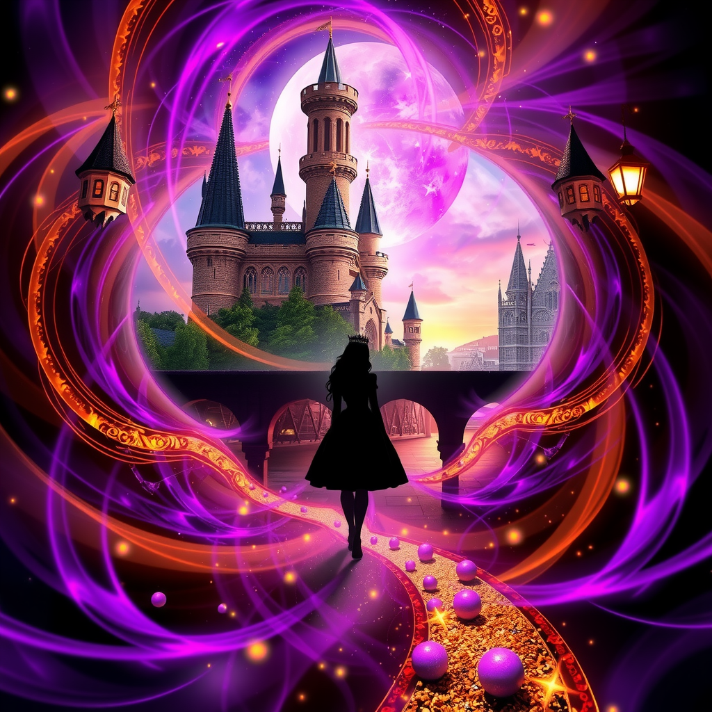
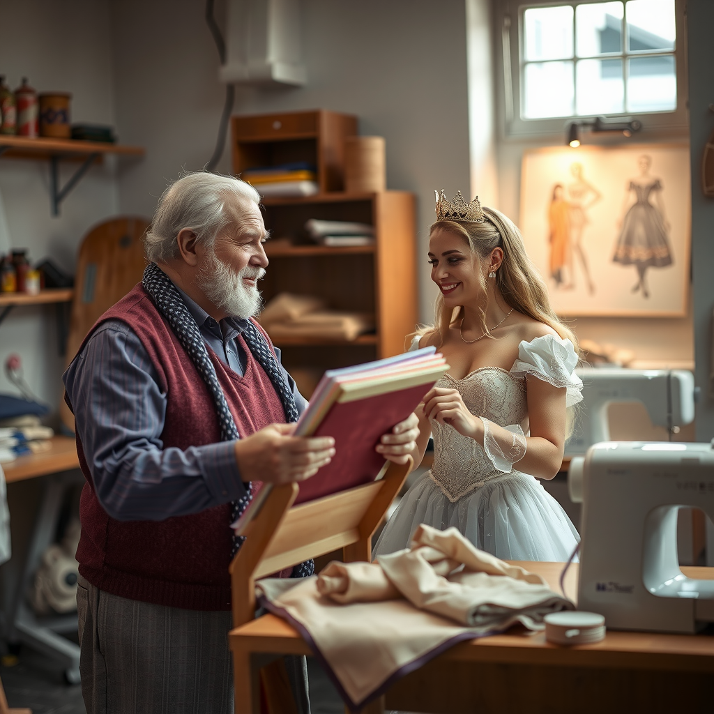
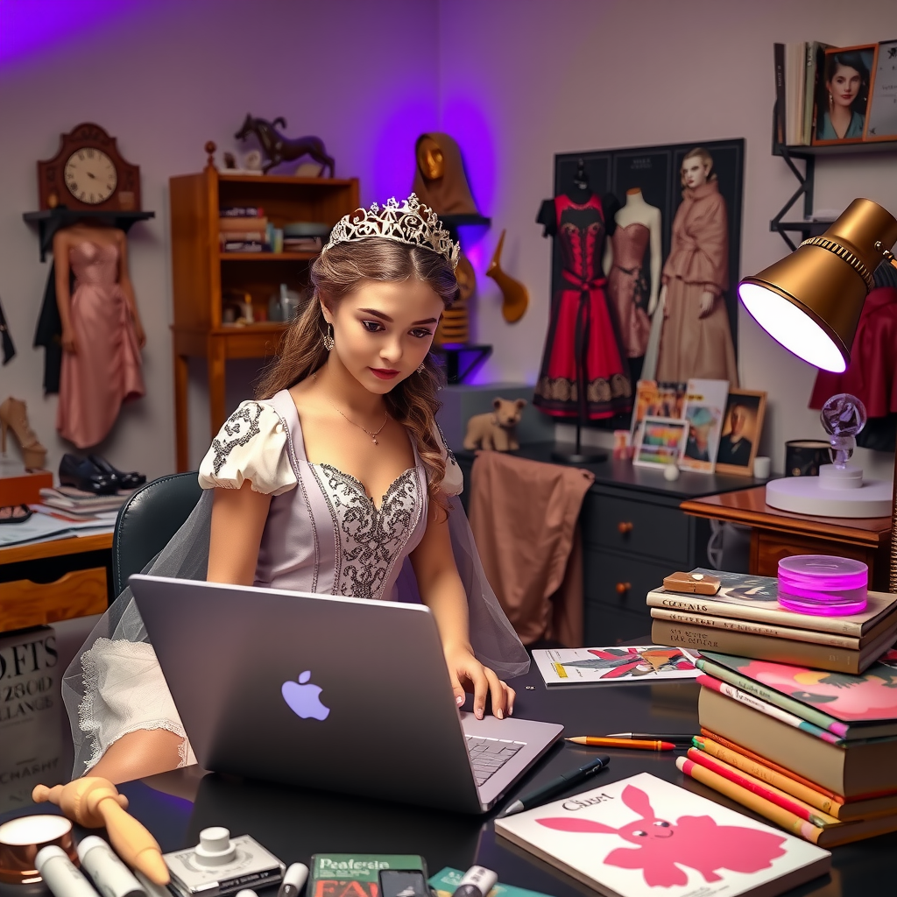
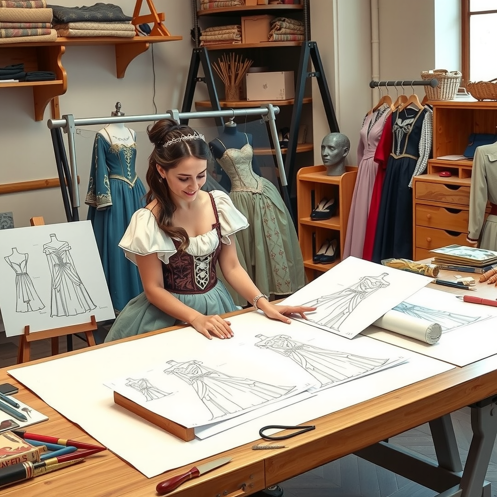
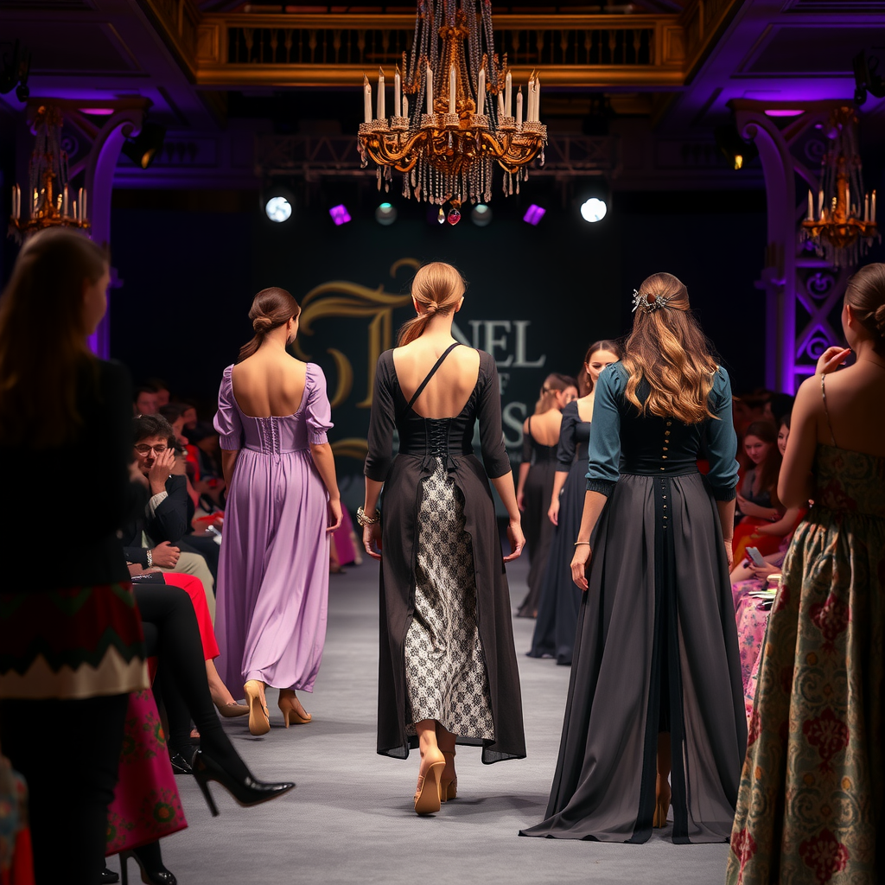
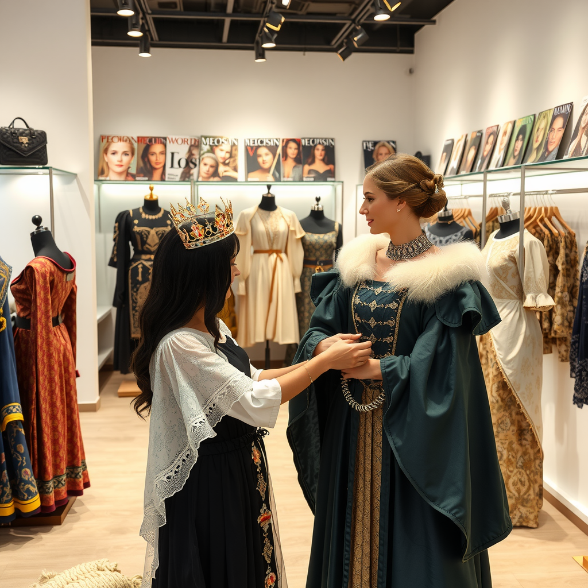
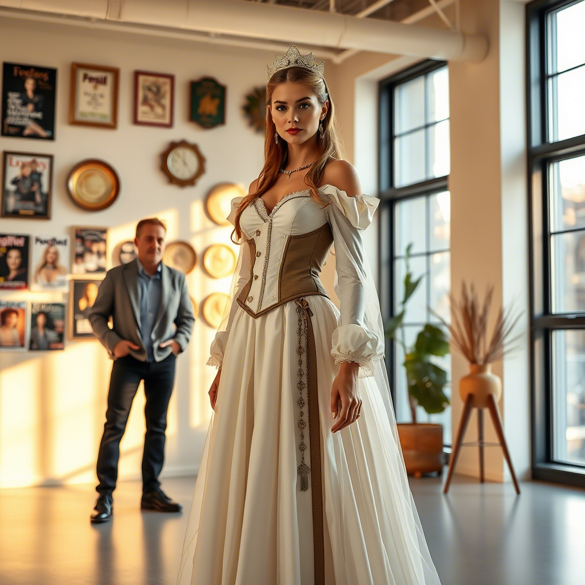

Capítulo 1: El Castillo de los Sueños
En un majestuoso castillo del año 1128, vivía una princesa de ojos morados que soñaba con algo más que su destino real...
Leer másLa princesa pasaba sus días recorriendo los enormes pasillos del castillo, admirando los tapices y los vestidos de la corte. Sus ojos morados, únicos en todo el reino, brillaban cada vez que imaginaba crear hermosos vestidos para todas las personas, sin importar su clase social. Sin embargo, sus obligaciones reales pesaban sobre sus hombros como una corona de hierro, recordándole constantemente que su destino estaba trazado desde su nacimiento.
Capítulo 2: El Pergamino Dorado
Durante uno de sus paseos por el castillo, un brillo dorado llamó la atención de la princesa...
Leer másEn un rincón olvidado del castillo, entre antiguos tapices y armaduras oxidadas, un pergamino bañado en oro captó su mirada. Las extrañas inscripciones parecían danzar ante sus ojos morados, como si la llamaran. Sin pensarlo dos veces, la princesa comenzó a leer las misteriosas palabras en voz alta, sin imaginar que cada sílaba la acercaba más a un destino extraordinario.
Capítulo 3: El Viaje en el Tiempo
Las palabras del pergamino desataron una magia antigua y poderosa...
Leer másDe repente, el mundo comenzó a girar a su alrededor. Luces brillantes y túneles de colores la envolvieron mientras viajaba a través del tiempo. La princesa flotaba entre épocas y siglos, atravesando el tejido mismo del tiempo. Su vestido medieval ondeaba en el viento temporal mientras cruzaba agujeros de gusano que conectaban su época con un futuro desconocido.
Capítulo 4: Un Nuevo Mundo
El año 2025 la recibió con un espectáculo de luces y sonidos nunca antes imaginados...
Leer másCuando el mundo dejó de girar, la princesa se encontró en una ciudad irreconocible. Donde antes se alzaba su majestuoso castillo, ahora se erguían edificios de cristal que tocaban el cielo. Las calles estaban llenas de extraños carruajes sin caballos y personas vestidas de formas que jamás había imaginado. Su vestido medieval y su porte real llamaban la atención de los transeúntes, que la miraban con curiosidad mientras ella contemplaba maravillada este nuevo mundo.
Capítulo 5: Peter, el Mentor
En medio de su confusión, un amable anciano se acercó a ayudarla...
Leer másPeter, un sastre jubilado de ojos bondadosos, vio algo especial en aquella joven desorientada. Sin hacer demasiadas preguntas, le ofreció su ayuda y un lugar seguro donde quedarse. La princesa encontró en él no solo un mentor, sino también un amigo que creía en sus sueños. Con paciencia y sabiduría, Peter comenzó a enseñarle sobre este nuevo mundo, mientras ella le compartía historias de su época que lo fascinaban.
Capítulo 6: Adaptándose al Futuro
Los meses pasaron mientras la princesa descubría las maravillas del siglo XXI...
Leer másPoco a poco, la princesa fue aprendiendo a usar las "máquinas mágicas" de la época moderna: teléfonos, computadoras e internet. Cada nuevo descubrimiento la maravillaba y le abría un mundo de posibilidades. Sus ojos morados brillaban con cada nueva experiencia, y su mente medieval comenzaba a entender que había llegado a esta época por una razón especial.
Capítulo 7: El Sueño de Diseñar
Con el apoyo de Peter, la princesa comenzó a dar sus primeros pasos en el mundo del diseño...
Leer másEn el pequeño taller de Peter, la princesa comenzó a aprender las bases del diseño moderno. Sus conocimientos de los elegantes vestidos medievales se mezclaban perfectamente con las técnicas contemporáneas. Peter la ayudó a inscribirse en una escuela de diseño, donde su perspectiva única y su pasión por la moda medieval llamaron la atención de profesores y compañeros.
Capítulo 8: Primeros Pasos en la Moda
Su primera colección fue una fusión mágica entre dos mundos...
Leer másCon determinación y creatividad, la princesa comenzó a crear diseños que mezclaban la elegancia medieval con la practicidad moderna. Sus vestidos contaban historias de dos épocas, unidos por hilos de imaginación y nostalgia. Su primer desfile fue un éxito rotundo, donde cada prenda reflejaba la magia de su viaje a través del tiempo.
Capítulo 9: Fusión de Dos Mundos
Sus diseños revolucionaron la industria de la moda...
Leer másLa princesa diseñadora se convirtió en un fenómeno de la moda. Sus creaciones, que mezclaban los detalles ornamentados del siglo XII con la funcionalidad del siglo XXI, cautivaron al mundo. Cada colección era un puente entre épocas, una celebración de la historia y el futuro unidos en perfecta armonía.
Capítulo 10: La Diseñadora Real
Su sueño finalmente se había hecho realidad, de una manera que jamás imaginó...
Leer másLa princesa había encontrado su verdadero reino en el mundo de la moda. Sus diseños no solo eran admirados por su belleza, sino que habían revolucionado la forma en que las personas veían la moda histórica. Junto a Peter, quien se había convertido en su familia en este nuevo mundo, la princesa comprendió que a veces los sueños se cumplen de las maneras más inesperadas, y que la verdadera realeza está en ser fiel a uno mismo.